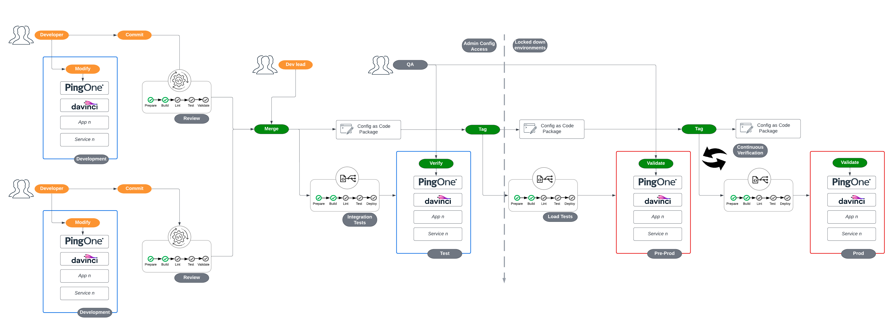

Getting Started with Configuration Promotion at Ping ¶
Automating configuration promotion brings efficiency, reliability, and risk mitigation into the deployment process. By automating the promotion of Ping solution configuration through various environments, organizations ensure consistency and repeatability in their deployment practices. When delivered via a Continuous Integration and Continuous Deployment (CI/CD) pipeline, this process not only accelerates the delivery of new features but also minimizes the potential for human error, a common source of configuration issues.
Note
- "Ping Solutions" as a term represents all forms of product and services that Ping Identity offers
- "Environments" as a term represents deployment environments such as: development, test, pre-production, production
- Mentions of terraform are relevant to Ping offerings that have an available terraform provider.
This document intends to raise considerations and provide suggestions to help build a strong foundation for automating configuration promotion as it relates to Ping Identity solutions. As such, guidance is provided generically and details of pipeline implementation are left to the implementor. Examples provided in this guide are intended only to serve as a common foundation when incorporating Ping Identity solutions into pipeline implementations.
The reader is assumed to be past the discovery and exploration phase of Ping products and is interested in adopting the DevOps and CI/CD practices for deploying into production environments. The reader should be familiar with the general concepts around CI/CD and SDLC as well as terms like:
- Continuous Integration / Continuous Deployment (CI/CD), including pipelines
- Infrastructure as Code (IaC)
- GitOps and similar methodologies
- Tools such as Terraform, Ansible, Kubernetes, Helm
- Foundational understanding of container technologies
- Basic DevOps understanding, including automation and testing
With these concepts in mind, this document will explore the following areas:
- Export Configuration as Code
- Validate Configuration
- Unit and Integration Tests
- Audit and Review Changes
- Promote and Deploy Configuration
- Verify Deployed Configuration
Example Pipeline Diagram ¶
For a common foundation on where concepts may be implemented into a pipeline, a generic pipeline diagram is shown here:
Expand Image

Export Configuration as Code ¶
Engineers responsible for contributing features within Ping solutions typically treat the GUI of the products as a development environment and thus will need a process to extract the resulting configuration into code.
Note
Ping Identity recommends that complex use-case development (such as authentication/authorization policy definition, or DaVinci flow design) takes place in the admin consoles, rather than manipulating exports directly.
Extracted configuration as code (CaC) may take various forms, but it should fit within the following guardrails:
-
Readability: Code should be human-readable and well-documented. Clear and concise code facilitates understanding, collaboration, and maintenance.
-
Modularity: Configurations should be organized into modular components. This makes it easier to manage, update, and reuse configuration settings across different environments or components.
-
Versioning: Like application code, configuration code should be versioned using a version control system. This enables tracking changes, rolling back to previous configurations, and collaborating effectively.
-
Idempotence: The configuration code should be idempotent, meaning that applying the same configuration multiple times has the same result as applying it once. This ensures that repeated executions do not lead to unintended side effects or inconsistencies.
-
Reproducibility: Configuration as Code should support the reproducibility of environments. Given a specific version of the configuration, it should be possible to recreate the same environment consistently.
-
Parameterization: Configuration should be parameterized to allow flexibility. This enables the same codebase to be used across different environments or instances with varying requirements.
-
Security Considerations: Implement security best practices in the configuration code. Parameterize sensitive information and ensure that access controls and permissions are well-defined and enforced.
-
Error Handling: Include proper error handling mechanisms in the code. Log meaningful error messages and provide information that helps diagnose and resolve issues quickly.
-
Auditability: Maintain an audit trail of changes to configurations. Ensure that changes are logged, and the reasons for each change are documented. This aids in troubleshooting and compliance.
-
Consistency Across Environments: Ensure that the same configuration codebase can be used across different environments (development, testing, production) with minimal modifications. This reduces the chances of configuration drift.
-
Scalability: Design configurations to scale as the system grows. Consider the ability to manage configurations for a growing number of services, components, or instances.
-
Collaboration: Facilitate collaboration among team members by following best practices for version control, code review, and documentation. Make sure that changes to the configuration are well-communicated and understood by the team.
-
Community and Ecosystem Support: Choose tools and frameworks that have active community and ecosystem support. This ensures that there are resources, plugins, and extensions available to enhance and extend the functionality of the configuration code.
Forms of how this configuration may be stored include:
- Terraform HCL for solutions that have published Terraform Providers (using the
terraform exportCLI feature) - Exported configuration files containing binary or structured data
- Postman API Collection
- Generic API Collection (which may be organized in an orchestrator such as Ansible or ICEflo)
- Server Configuration Profiles (applies to Ping Software Docker Images)
Validate Configuration ¶
Validating configuration as code (CaC) is an important prerequisite for building confidence in the code review and promotion process. Code validation delivered via open-source tooling or developed scripts can be automatically run within the promotion pipeline.
Aspects of validation include:
-
Syntax Checking: Use syntax checkers specific to the configuration language you are using (e.g., YAML, JSON, HCL). Ensure consistent formatting and coding style across your configuration files to help with reviewability.
-
Linting: Additional linting beyond syntax checking can be used for service-specific validations. This may include dependency checking between configuration modules or logical error identification.
-
Security Scanning: Perform security scans on your configuration code to identify and remediate vulnerabilities. Ensure that sensitive information (e.g., passwords, API keys) is properly hidden and managed.
-
Compliance Checks: Implement checks for regulatory compliance and company policies within your configuration validation processes.
Forms of configuration validation include:
terraform validate- json lint
- Postman schema validation and syntax error checks
- terraform sentinel policies
- static code analysis tools
Initial Configuration (Deployment) Validation ¶
Configuration (deployment) validation beyond CaC validation by introspecting the environment after config deployment has taken place. This introspection can include specific tests to ensure that the configuration has been applied successfully and consistently, and can also validate configuration that has been implicitly defined by the platform APIs on creation (such as default values for optional fields not provided during deployment configuration).
This validation step can ensure that environments are built consistently before running functional and non-functional tests against the environment.
Aspects of configuration/deployment validation include:
-
Keeping a record of the desired end state configuration values: - To be able to validate that configuration has been applied successfully, the administrator/developer will need to write validation tests, or keep a key-value map of end-state configuration for required, optional and defaulted parameters. These can then be verified once deployment has completed.
-
Checks and warnings if configuration does not match the desired state: - The deployment process needs a way to alert the administrator to configuration that is unexpected. This might include a blocking error in the CI/CD pipeline, or may be warnings that a deployment reviewer can assess on a case-by-case basis.
Forms of configuration/deployment validation include:
terraform testin the Terraform Testing Framework, that runs configuration validation based on assertions that developers write in their CaC packages. This process generates short lived infrastructure configuration to validate that changes to HCL (especially in modules) does not include breaking changes.- Terraform state validation (a native feature of Terraform) that compares the intended configuration defined in HCL against the responses from the API.
- Use of the Terraform
check {}block, that provides non-blocking warnings if deployed configuration does not pass developer/administrator defined assertions.
Unit Testing ¶
Unit testing goes a step beyond validation by running code to ensure the configuration is functional and achieves what is intended of it. Unit tests aim to test individual components of configuration to isolate issues. Build tests into your continuous integration (CI) pipeline to run them automatically whenever changes are made to the configuration. This helps catch issues early in the development process.
Aspects of unit testing include:
-
Isolation of Components: Test individual components of your configuration in isolation. Unit tests should focus on a specific piece of configuration, ensuring that it behaves as expected independently of other components.
-
Mocking and Stubbing: Use mocking or stubbing techniques to isolate the unit under test from external dependencies. This allows you to control the behavior of external components and focus on testing the specific unit. Mocking and stubbing Ping Services could mean virtualizing the backend services.
Forms of unit testing include:
terraform test- terraform tests run against test-specific, short-lived resources, preventing any risk to your existing infrastructure or state.- Code specific frameworks just as Jest (for Javascript) or the native
go test(for go) - Postman's Mock Server feature can simulate backend API responses.
Integration Testing ¶
Integration testing goes a step beyond unit testing by ensuring the whole configuration or modules are tested as a group. Integration tests aim to test identify regression between dependencies. Build tests into your continuous integration (CI) pipeline to run them automatically whenever changes are made to the configuration. This helps catch issues early in the development process.
Aspects of integration testing include:
-
Realistic Environment Simulation: Create integration tests that simulate a realistic environment as closely as possible. This may involve using test environments or containers to replicate the production setup.
-
End-to-end Testing: Perform end-to-end testing to validate the entire configuration, including its interactions with non-Ping system configuration that is managed simultaneously.
-
Data Consistency: Check for data consistency across different components. Ensure that data passed between various configuration elements maintains integrity and coherence.
-
Negative Testing: Conduct negative testing to evaluate how well the configuration handles unexpected or invalid inputs, errors, and adverse conditions. This type of testing aims to identify vulnerabilities, ensure graceful error handling, and enhance overall robustness and security.
Forms of integration testing include:
- Code specific frameworks just as Jest (for Javascript) or the native
go test(for go) - Postman's Mock Server feature can simulate backend API responses.
- open-source testing frameworks, such as Citrus, Fitnesse
- Selenium automates browsers for testing configuration from the client perspective
Audit and Review Changes ¶
The audit and review before accepting and deploying changes provide a gate for human interaction and validation of new features. This stage should provide a view to see the differences between the current and desired configuration. To do this effectively engineers should have a clear format to interpret configuration exports and what the functional intention of changes are. The audit and review process should enforce protection against users pushing through unverified changes and encourage the reviewer to check and revalidate compliance with all other areas mentioned in previous sections.
Forms of auditing and review of changes include:
- GitHub Pull Request with Reviewers
- QA Engineer reviewing configuration within the UI of an automatically deployed Ping Solution
Promote and Deploy Configuration ¶
Once configuration changes pass review the pipeline is ready to promote those changes into a pre-production and then production environments. Manual configuration access should not be available in pre-production or production environments and this deployment should be automated in a similar or identical form of any other environment. Environments beyond QA or Test should have continuous monitoring for errors as well as acceptable performance thresholds and alerting of outages. There should be an incident response plan for any anomalies that may be detected. Notification of anomalies could trigger an automated rollback if mutation outcomes can be guaranteed.
Forms of deployment of approved configuration include:
terraform apply- postman API collection with Newman CLI
- collection of APIs with cURL
- Server Configuration Profiles with
helm install, customized docker image builds (applies to Ping Software Docker Images)
Continuous Deployment Configuration Verification ¶
Continuous verification is an automated process to detect configuration drift by calling read (GET) APIs and validating responses against the current desired configuration to identify drift and possible paths to remediation. Ping Solutions may have involvement with external systems or dynamic configuration, as such, the ongoing re-verification of configuration should include testing to confirm against external configuration interference.
Forms of Continuous Verification include cron jobs running:
terraform plancommand returning empty plan. This might involve HCL that includes the Terraformcheck {}block that can provide warnings if non-managed configuration is seen to drift from defined assertions.- postman API collection of reads that include response verification tests
- nodejs api test package
Conclusion ¶
In conclusion, effective configuration promotion is paramount to the success and stability of modern Ping solutions within an overall system. This document has explored the key principles and steps involved in promoting configurations across different environments as they relate to Ping solutions. By adopting a systematic and well-planned approach, organizations can mitigate risks, ensure consistency, and streamline the deployment process.
Configuration promotion is not just a technical process; it is a strategic endeavor that demands collaboration, communication, and adherence to best practices. Through version control, automated testing, thorough code reviews, and staged environment deployments, teams can confidently and reliably push configurations from development to production.
As organizations embrace agile methodologies and DevOps practices, the ability to promote configurations seamlessly becomes a competitive advantage. By valuing transparency, accountability, and a culture of collaboration, teams can navigate the complexities of configuration promotion with confidence, delivering robust and secure systems to end-users.